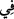

Hizmet isteği ve öte dünyaya gitme azmi
Ağızdaki helâl lokmadan doğar.
“O halde biz veya siz, ikimizden biri, ya doğru yol üzerinde veya açık bir sapıklık
içindedir.” Yâni biri rızık vermeyi ve zâtî kudreti tek olarak elinde bulunduranı
(Allah’ı) bir tanıyan ve ibâdeti O’na tahsis eden; diğeri imkânî mertebelerin en
aşağısına nüzûl eden cansız varlıkları ibâdette Allah’a ortak koşan bu iki gruptan birisi
elbette ya hidâyet veya açık bir sapıklık üzeredir.
Kimin hidâyet ve kimin dalâlet üzere olduğunu tayin ve beyan eden beliğ bir takrirden
sonra gelen bu söz, önceden açıkça söylenmesinden daha beliğ ve etkilidir. Çünkü bu
şekilde söylenen söz en inâd ve azılı hasmı dahi susturacak insaf yolları üzere cereyan
etmiştir. Bu sözün benzeri bir adamın arkadaşına târizde bulunmak için söylediği “Allah
bilir ki ikimizden biri yalancıdır.” sözüdür. Bu sözün anlamı şudur: İki kişi birbirlerine
düşmanlık besler. Biri haklı, diğeri haksızdır. Haklı olan der ki: “Çaresiz içimizden biri
yalancıdır.” Onun bu sözden maksadı, haksız olanı yalanlamak, kendisini doğrulamaktır.
İşte bu sebepten Hz. Peygamber (a.s.) karşılıklı mülâanede bulunanlar için şöyle
buyurmuştur: “Allah biliyor ki ikinizden biri yalancı. Sizden tevbe eden var mı?”
Ayetteki “veya” kelimesi, şüphe olduğu için veya muhâtabı şüpheye düşürmek için
değil, sadece söze bir kapalılık katmak, adâlet ve insâfı izhâr etmek içindir. Bazıları
buradaki “veya” kelimesinin “ve” mânâsına olduğunu söylemiştir. Yâni biz ve siz îman
edersek elbette hidayet üzereyiz, îman etmezsek açık bir sapıklık üzereyiz demektir.
Burada harf-i cerlerden birinin “ diğerinin de “” olarak değişik getirilmesi, şunu
bildirmek içindir: Hidâyete erip hak üzere olan kimse, sanki yüksek bir yere çıkıp
oradan eşyaya bakıp onlara muttali olan ya da yarış atına binmiş onu istediği yere dört
nala koşturan kimse gibidir. Dalâlette olan ise sanki karanlığa batmış hiçbir şey
göremeyen, nereye yöneleceğini bilemeyen veya derin bir kuyuya atılan ya da çıkmaya
güç yetiremediği bir çukurda hapsedilmiş kimse gibidir.
25. De ki: “Bizim işlediğimiz suçtan siz sorumlu değilsiniz; biz de sizin
işlediğinizden sorulacak değiliz.”
“De ki: “Bizim işlediğimiz suçtan” yapıp edip kazandığımız, hiçbir mü’minin
işlemekten uzak olmadığı küçük günahlardan, zelle ve hatalardan “siz sorumlu
değilsiniz; biz de sizin işlediğinizden” küfür inkâr ve büyük günahlardan “sorulacak
değiliz.”
“ cürüm işlemek, “ ise günah demektir. Asıl mânâsı kesmektir. İstiâre
yoluyla istenmeyen her iş için kullanılmıştır. Nitekim el-Müfredât’ta böyle geçmektedir.